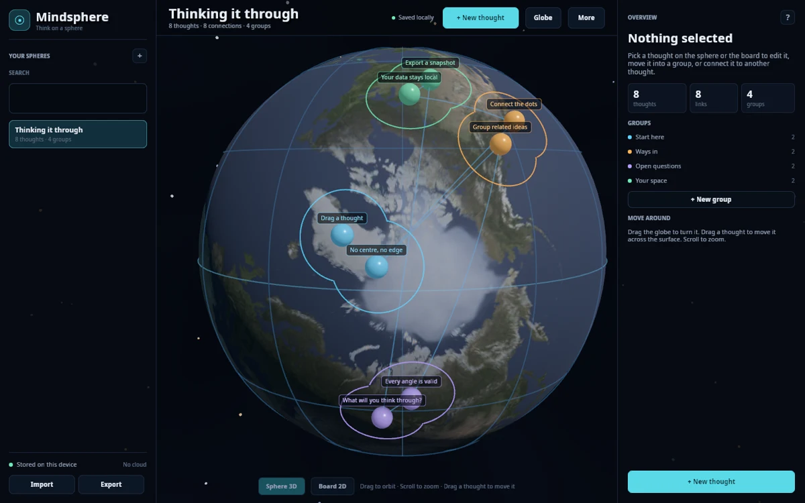
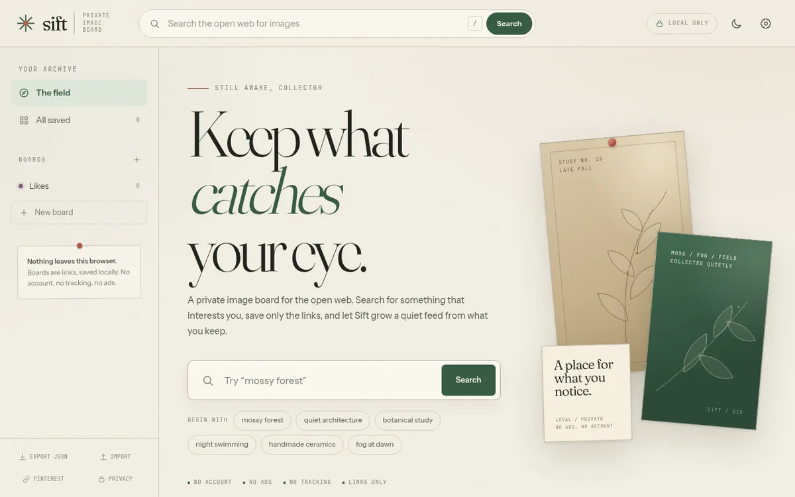
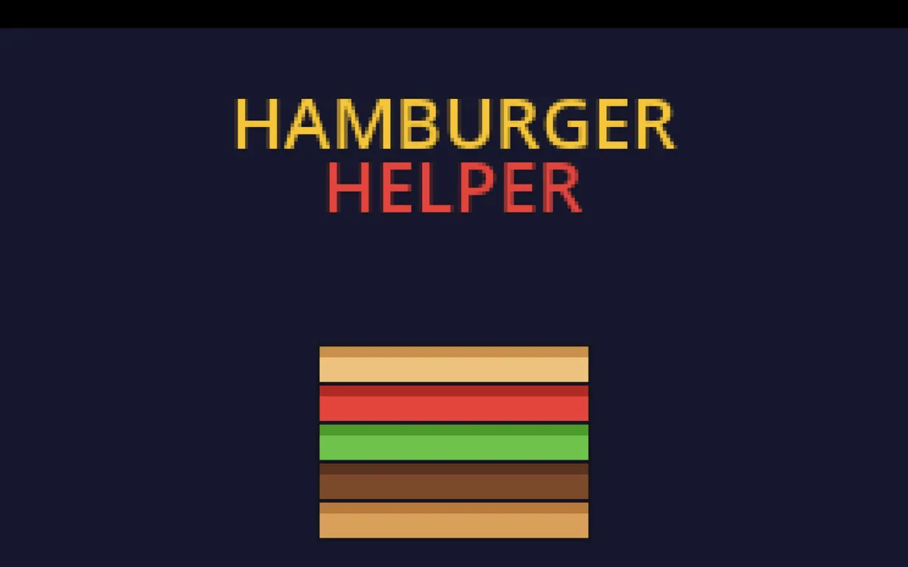
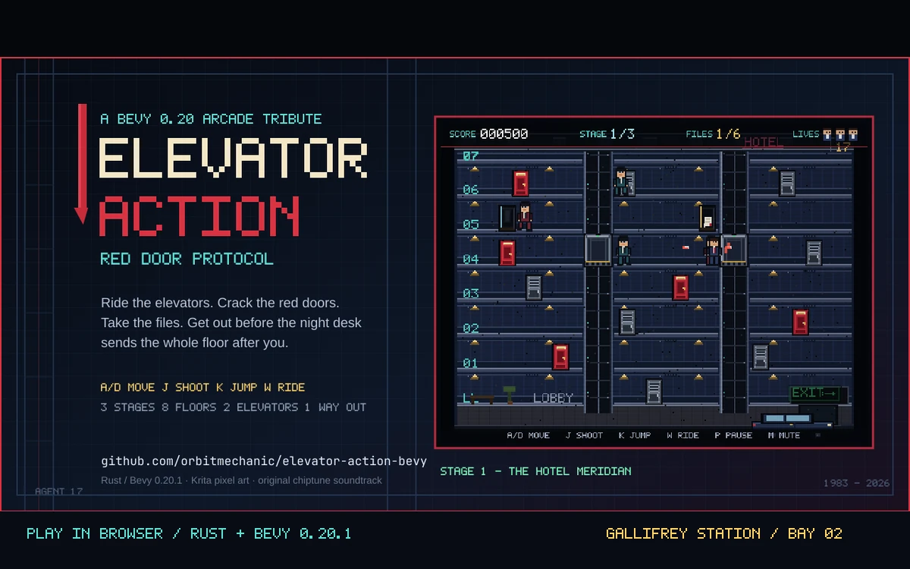
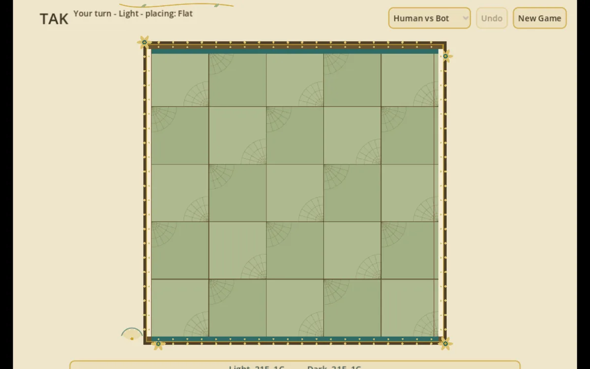

Gallifrey Station / Clark Point 1
OrbitMechanic
Recovering rocket scientist. Building strange, useful things in low orbit.
01 / Captain's log
A small station with a long antenna.
Part workshop, part arcade, part launch pad. The work here starts with a question and ends with something you can open in a browser.
I'm Bob Clark — the Orbit Mechanic. I spent years around rockets, then traded the launch pad for a workbench and started building small worlds that make complicated systems legible.
Gallifrey Station is the home base for that work: local-first tools, playable experiments, and simulations that treat software as a place you can visit rather than a product you consume.
No trackers. No ads. No growth funnel. Just experiments, shipped.
- Callsign
- Orbit Mechanic
- Home port
- Florida, USA
- Affiliation
- Orbital Investments LLC
- Mission
- Make complex systems legible.
- Signal
- Online
02 / Docking bays
Recent launches
Six live experiments, sorted by what they are: applications for daily use, games to poke at, and decentralized finance experiments that run on their own.
Applications
Local-first tools with no accounts and no cloud dependency.

Bay 01 LiveMindsphere
A local-first sphere mind mapper built with Rust and Bevy. Groups settle into living outlines, planets skin the globe, and your thoughts never leave your device.
Open bay
Bay 02 LiveSift
A private, ad-free image board for the open web. Search museums, archives, memes, and open collections, then mix a feed from what you keep. A VPN check runs before it reaches out.
Open bayGames
Playable worlds, arcade homages, and one very determined board game.

Bay 03 LiveHamburger Helper
A 2D burger-stacking arcade game in the tradition of Burgertime. Climb ladders, drop ingredients, throw pepper.
Open bay
Bay 04 LiveElevator Action
A 2D sprite-based arcade homage in Rust and Bevy. Ride two elevators through eight floors, crack the red doors, and reach the getaway car.
Open bay
Bay 05 LiveTak
The Tak board game with a Monte Carlo Tree Search opponent. Place stones, build roads, cap towers.
Open bayDecentralized finance experiments
On-chain systems that pay their own way.
Also in the hangar
All repositories03 / Dispatch
The Omniverse
The station's video channel. Field notes on the convergence of emerging technologies — demos, experiments, and the occasional transmission from the workbench.
Open the channel04 / Gateways
Open a channel
The station is reachable on the usual frequencies. Pick a door.